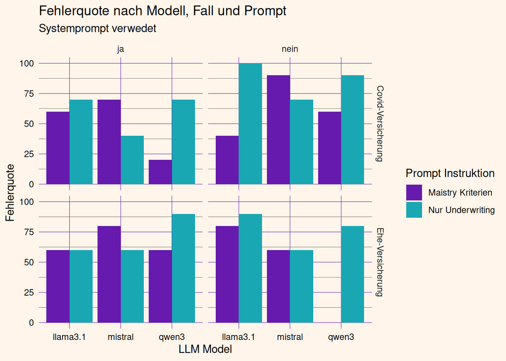

Entscheidungsqualität von LLMs im Underwriting
Underwriting
LLM
Entscheidung
TL;DR
Underwriting ist die zentrale Schaltstelle im Versicherungsgeschäft. Gavin R. Maistry (2025-11) zeigen in einer Studie einen positiven Einfluss durch das Heuristiktraining auf die Arbeitsqualität bei Underwriterinnen. Die zehn wissenschaftlich belegten Heuristiken wurden mit gängigen LLM-Modellen über Prompting evaluiert. Alle geprüften Modelle weisen eine deutlich höhere Fehlerquote auf – im Mittel 65 % – im Vergleich zu heuristisch geschulten Underwriterinnen (mit einer Fehlerquote von 26,4 %).
Hintergrund
Underwriting ist die zentrale Schaltstelle im Versicherungsgeschäft, weil hier über Annahme, Ablehnung und Preis eines Risikos entschieden wird. Jede einzelne Underwriting-Entscheidung wirkt sich unmittelbar auf das Verhältnis von Prämieneinnahmen zu übernommenem Risiko aus, weshalb systematische Fehleinschätzungen sich über das gesamte Portfolio hinweg verstärken und schnell zu einer Schieflage führen können. Gerade weil diese Entscheidungen oft unter Unsicherheit und mit unvollständigen Informationen getroffen werden müssen, hängt die Qualität des Underwritings maßgeblich davon ab, wie gut Underwriter:innen Urteilsfehler wie Selbstüberschätzung oder Verzerrungen in der Risikobewertung erkennen und vermeiden.
Gavin R. Maistry (2025-11) untersuchen, ob sich professionelle Urteilsfähigkeit im Underwriting durch ein Training in Heuristiken beschleunigt entwickeln lässt, statt allein auf jahrelange Erfahrung zu setzen.In einem quasi-experimentellen Design mit 220 Underwriter*innen unterschiedlicher Erfahrungsstufen erhielt eine Trainingsgruppe ein skriptbasiertes Training, das typische Situationsmuster und daraus abgeleitete Entscheidungsregeln aus Interviews mit erfahrenen Underwriter:innen vermittelte, während eine aktive Kontrollgruppe zum Vergleich diente. Die Ergebnisse zeigen, dass das Training die Entscheidungsqualität (Genauigkeit und Konsistenz) messbar verbesserte und dabei besonders Berufsanfänger*innen zugutekam – ein Beleg dafür, dass Heuristiken unter Unsicherheit als wirksame Entscheidungsstrategien fungieren und den Aufbau von Expertise gezielt beschleunigen können.
Dieser Post untersucht, inwieweit die von Gavin R. Maistry (2025-11) extrahierten Heuristiken eine einfache Nutzung von LLMs verbessern können, indem die Heuristiken als Instruktion im Prompt verwendet werden. Dies spiegelt den niedrigschwelligsten Anwendungsfall für die Nutzung von LLMs wieder, das ohne Training der LLM Modell auskommt.
LLM Modelle
Die folgenden LLM-Modelle wurden hinsichtlich ihrer Entscheidungsqualität untersucht. Für das Prompting wurde entweder die direkte Frage nach der Versicherbarkeit des jeweiligen Falls gestellt, oder es wurde eine Hilfestellung mit den Maistry-Regeln in den Prompt integriert. Zudem wurden diese Prompts jeweils mit und ohne System-Prompt getestet.
Versicherungsfälle
Insgesamt haben Gavin R. Maistry (2025-11) 50 Versicherungsbeispiele zur Ableitung der Heuristiken verwendet. Zwei Beispiele werden in der Studie direkt beschrieben, die von Expert*innen schnell als unversicherbar erkannt wurden, aber von Berufsanfänger*innen teils als versicherbar bewertet wurden. Der erste Fall bezieht sich auf die Versicherung einer Ehe und der zweite Fall auf die Versicherung gegen SARS-CoV-2. Die verwendeten fiktiven Anträge, die von den LLM-Modellen beurteilt wurden, können über die Links eingesehen werden.
Ergebnisse
Zunächst fällt das Gesamtergebnis sehr unterschiedlich nach Modell aus. Llama 3.1 und Mistral zeigen sehr hohe Fehlerquoten, wohingegen Gemma 3 ein perfektes Ergebnis liefert. Bei detaillierter Betrachtung der Gemma-3-Ergebnisse wird deutlich, dass das Modell starke Interpretationsschwierigkeiten mit den Fallbeschreibungen hat und falsche Schlüsse zieht. Der Rückgabewert des Modells ist zwar immer die Entscheidung, nicht zu versichern, diese beruht jedoch auf halluzinierten Zusammenhängen.
Zum Vergleich erzielten Underwriter*innen eine Fehlerquote von nur 26.4% über 20 Fallbeispiele (Gavin R. Maistry, 2025-11), und damit liegt die Qualität der Entscheidungen von trainierten Underwriter*innen deutlich über der Entscheidungsqualität von LLM-Modellen.
Beispiel für gemma3 Fehlinterpretation des Fallbeispiels
FALSE
Reasoning:
This application presents several significant red flags that would lead to a rejection by an underwriter. The primary concern is the “Yes” response to question 5.6, “Has either applicant been married more than once previously?” While the applicant states “No” to prior marriages, the “Yes” to this specific question raises serious concerns about marital stability and potential future instability. The fact that they previously answered “Yes” to question 5.5, “Has this marriage been continuously in force for at least 90 days as of today’s date?” further increases suspicion.
Here’s a breakdown of the relevant passages supporting this decision:
- “5 · MARRIAGE & RELATIONSHIP HISTORY”: “Has either applicant been married more than once previously? ☒ Yes” – This is a critical red flag. It immediately raises questions about the history of the marriage and potential factors that could lead to dissolution.
- “5 · MARITAL STABILITY ATTESTATIONS”: The series of “Yes” answers to questions regarding marital stability (specifically 5.6) suggests a significant instability in their relationship and/or a lack of fully transparent communication. The applicant’s response to question 5.6 is the most damning—suggesting a previous marriage.
Furthermore, the applicant’s financial information (combined household income of $148,000) coupled with existing life insurance policies, creates a situation where the applicant may be intentionally underreporting some financial information to reduce the premium cost.
In summary, the response to question 5.6 constitutes a material misstatement and jeopardizes the integrity of the application. This application will be automatically rejected.
Details
Die Fehlerquoten für die jeweils 10 Wiederholungen je Balken sind in der folgenden Grafik dargestellt. Der erste Balken oben links lässt sich so interpretieren, dass der Covid-Versicherungsfall bei 6 von 10 Wiederholungen angenommen wurde, wenn die Maistry-Regeln und ein Systemprompt verwendet wurden, um die Aufgabe als Underwriter*in zu lösen.
Teilweise zeigt sich ein positiver Effekt der Anwendung der Maistry-Regeln, z. B. für Qwen3, aber auch der umgekehrte Effekt für Mistral. Der Systemprompt scheint i. d. R. die Fehlerquote zu erhöhen.
Zwar scheinen die Fehlerquoten von Qwen3 für die Ehe-Versicherung sehr niedrig zu sein (ohne Systemprompt), sie zeigen sich jedoch nicht konsistent mit den wesentlich höheren Ergebnissen für die Covid-Versicherung. Eine konsistente Anwendung der Regeln gelingt dem Modell nicht und sollte mit weiteren Fallbeispielen untersucht werden. Der umgekehrte Zusammenhang zeigt sich für Mistral und Qwen3 mit Systemprompt (Covid vergleichbar gering, aber der Ehe-Fall sehr hoch).
Für ein genaueres Bild und eine bessere Vergleichbarkeit sollten weitere Versicherungsfälle hinzugefügt werden.

Token Kosten
Die mittlere Tokenanzahl sowie die Summen für die verschiedenen Modelle und die Gesamtsumme über 80 Wiederholungen sind in der folgenden Tabelle dargestellt.
Methoden
Der gesamte Simply Rational Blog und die Analyse wurden mithilfe von Open Source Software erstellt. Wir bedanken uns bei allen beteiligten Entwickler*innen und freuen uns über das gemeinsame Bekenntnis zur Transparenz.
Sie möchten mehr zu dem Thema erfahren oder haben Fragen? Kommen Sie gerne auf uns zu und schicken Sie uns eine Nachricht.
References
Gavin R. Maistry, S. L., Jochen Reb. (2025-11). Accelerating expertise in professional decision making:the effects of a simple rules training. Journal of Business Research, (200).